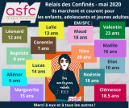
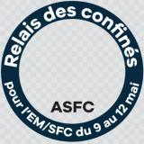
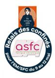
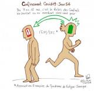
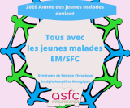
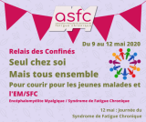

Accueil > Actualités
RELAIS DES CONFINÉS du 9 au 12 Mai 2020 5492 kilomètres ont été parcourus
Merci à tous de votre engagement !
5492 Kilomètres parcourus !
Ils courent dans leur jardin pour la bonne cause
Publication dans la Nouvelle République -deux sèvres
Johann Mallet et Olivier Mottay ont parcouru environ 100 km en courant dans leur jardin.
Ils courent dans leur jardin
9 Mai-251 Inscrits à 9H00 -258 en activité à midi ! - 339 inscrits en fin de journée !
1527 kilomètres parcourus pour cette journée.
10 MAI - 367 Inscrits , Deuxième jour de notre Relais des Confinés, dernière étape : 995 km - arrivée à Nice.
Bravo à tous pour tous ces kilomètres parcourus aujourd'hui, Total du jour 1858 km ...,
Quelle va être notre prochaine ville étape ? Tout dépend de vous .... car nous, ASFC, nos adhérents et les personnes atteintes d'EM/SFC avons besoin de vous tous, inconnus, proches, voisins, amis, clubs de sport et sportifs qui ont envie de se surpasser, ou pas, ... Des malades participent aussi, chacun en fonction de ce qu'il peut faire, quelques mètres en marchant, un peu plus pour certains, impossible pour ceux qui ne peuvent pas bouger.
à demain pour la suite de notre Relais des Confinés !
11 MAI ACTU ASFC
#12mai2020 #couriremsfc Un clin d'oeil à Olivier et Yohann de Gât' Team Runners qui ont couru leur Relais-jardin pendant 12 h au lancement de notre Relais des Confinés samedi !
12 MAI
Dernière étape retour sur Paris 500 kms
ACTU ASFC #12mai2020 #couriremsfc Mise à l'honneur des jeunes participants à notre Relais des Confinés !
Avec vos partages et vos likes, merci d'applaudir et d'encourager cette mobilisation de la jeunesse, et de plus prometteuse !
pagefacebook ASFC

#ASFC #EMSFC #MECFSPour ce faire, voici ce que nous proposons:
aller sur le site https://www.francetvinfo.fr/en-direct/
ou sur leur application france info
dans la rubrique du "Live", écrire ou faire un copier/coller du message suivant:
#couriremsfc @ASFCEMSFC #CONFINEMENT #DECONFINEMENT
A la recherche des « derniers défis confinés » ? Nous avons ce qu'il vous faut :
Des exploits sportifs comme un relais-jardin de 12 heures en binôme à distance, un marathon confiné, ou quelques kilomètres … Des malades aussi vont tenter de parcourir quelques mètres chez eux.
Du 9 au 12 mai, avec un Relais des Confinés organisé par l'ASFC à l'occasion de la journée internationale de l'EM/SFC (Encéphalomyélite Myalgique / Syndrome de Fatigue Chronique) le 12 mai pour faire connaître et reconnaître cette pathologie et faire sortir de l'ombre tous ces malades qui sont bien trop souvent confinés, et ce sans Covid-19.
Soutenez notre mobilisation avec un article, une interview, un reportage et merci à vous
Communiqué de presse : http://www.asso-sfc.org/documents/an-445-Communique-de-presse.pdf
les différents # sont importants et essentiels pour espérer pouvoir apparaître dans leur live
si vous le pouvez et si vous le souhaitez, vous pouvez faire cette démarche une fois par jour, ou plusieurs fois, à partir d'aujourd'hui et jusqu'au mardi 12 mai.
"TOUS AVEC LES JEUNES MALADES EM/SFC"
N'hésitez pas à inviter vos proches, vos amis, et tous ceux qui auraient envie de se joindre à nous ! Le but est de parcourir tous ensemble, et à distance bien sûr, la plus longue longue distance possible d'un relais confiné, et toutes les distances parcourues seront comptabilisées même les plus modestes !
Mettez votre photo de profil à jour avec ce décor de Association Française du Syndrome de Fatigue Chronique.

lien photo
TOUTES LES INFOS :
Communiqué courir 09.05.2020
Mode d'emploi pour créer et installer son compte Strava
Créer et installer son compte STRAVA
Comment rejoindre le club de l' association
relais des confinés et enregister activité
3/05/2020 - Communiqué de presse à télécharger
Communiqué de presse
Affiche relais et dossard
site affiche relais

Voici une illustration très sympa d'un participant à notre "Relais des Confinés", Le Run c'est Fun ! De quoi motiver à continuer de courir et de marcher pour l'EM/SFC ...
« J'y participe pour offrir un peu d'énergie à ma manière pour toutes ces personnes qui subissent la fatigue chronique. Une maladie vicieuse qui peut toucher n'importe qui, n'importe quand car la vie est faite de haut et de bas. »

Le 1 er Mai -ACTU ASFC #12mai2020 #couriremsfc - RDV aujourd'hui à partir de 14h30 sur Radio Sonic pour retrouver Céline qui est interviewée au sujet de sa participation à notre Relais des Confinés du 9 au 12 mai.
Un grand merci à elle pour sa mobilisation !
Interview relais des confinés
23/04/2020
Afin de mener au mieux nos actions prévues dans le cadre de notre projet de mettre la lumière sur les jeunes malades et l'EM/SFC, nous prolongeons "2020 Année des jeunes malades" en 2021 et il devient "Tous avec les jeunes malades EM/SFC".
Merci à tous d'être aussi nombreux à vous mobiliser pour notre première action "Relais des Confinés" ! D'autres actions vont suivre prochainement ...

Découvrez le parcours de l'un des participants pour le Relais des Confinés, ils vont être
deux pour courir un relais, chacun dans son jardin respectif, pendant 12 h le 9 mai (Gât' Team Runners). gat'team runnershttps://www.facebook.com/ASFCEMSFC/
Un bel exploit en vue pour démarrer ce relais des confinés, n'est-ce pas ? Merci à eux.
Mais ne vous laissez pas impressionner ... Pas besoin de viser une telle performance pour participer : toutes les distances parcourues seront comptabilisées, même les plus modestes. L'important est que chacun fasse en fonction de ses possibles.
lien facebook pour vidéo

12 mai 2020
Journée Internationale du Syndrome de Fatigue
Seul chez soi
Mais tous ensemble !
Pour courir pour les jeunes malades et l' EM/SFC
 Qui compte participer à ce Relais des Confinés ? Mettre OK en commentaires si c'est le cas et/ou taguer ceux que vous pensez inviter à courir ou à marcher chez eux et pour nous ! Merci à vous !
Qui compte participer à ce Relais des Confinés ? Mettre OK en commentaires si c'est le cas et/ou taguer ceux que vous pensez inviter à courir ou à marcher chez eux et pour nous ! Merci à vous !C'est le moment de tous se rassembler autour d'une action collective, même en restant chez soi et confinés ...
Plus d'infos à venir ici, page facebook ASFChttps://www.facebook.com/ASFCEMSFC/
sur Twitter ou notre site internet semaine prochaine
<< Retour à la liste

- inserm.fr/actualites/ru
- alliance-maladies-rares
- eurordis.org
- orpha.net/consor/cgi-bi
- maladiesraresinfo.org
- plateforme-maladiesrare
- has-sante.fr
- fnath.org
- france-assos-sante.org/
- sfr.larhumatologie.fr
- hemochromatose.fr
- association-afvd.com/
- afgs-syndromes-secs.org
- droitsdesmalades.fr/
- sante.gouv.fr
- phoenixrising.me
- investinme.org
- iacfsme.org/
- solvecfs.org/
- meassociation.org.uk/
- https://aqem.org
 Ce site respecte les
principes de la charte HONcode.
Ce site respecte les
principes de la charte HONcode.
Vérifiez ici.
Dernière mise à jour le 20/06/2012
Copyright ASFC ©2012-2026 mentions légales - Réalisé par OPALE WEB - OPALIS'TIC